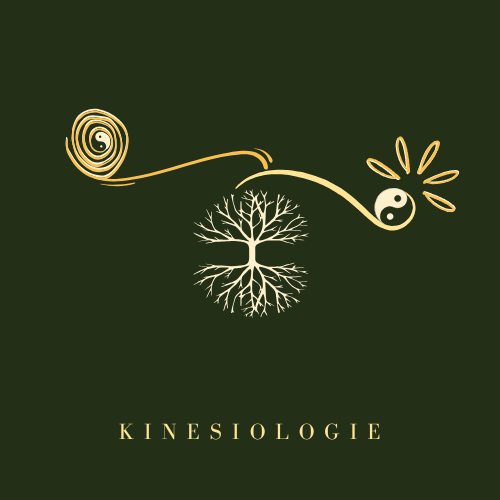

Kinésiologie
Un temps pour explorer ce qui vous préoccupe à l’aide du test musculaire.
Déroulement de la séance
Nous commençons par un échange sur le motif de votre venue. Vous restez habillé·e sur la table et j’exerce une légère pression, généralement au poignet. Selon la séance, je vous propose des mouvements ou des exercices simples. Comptez 1 h 30 pour un premier rendez-vous.